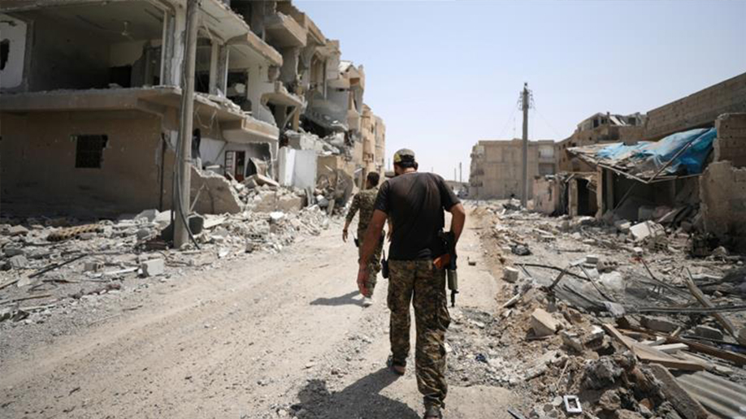

In June 2014, following over 2 years of the Syrian civil war, the Salafi Jihadist group under the banner of the Islamic State of Iraq and Al-Sham proclaimed itself a worldwide caliphate in an area straddling the Syrian border.
-
ISIS Convoy in Ramadi -
ISIS Convoy in Raqqa The destruction of Raqqa following ISIS What followed was the terror group's conquest of over 34,000sq miles of the middle east, and the subjugation of over 8 million people under its flag.Syrian Kurds' at the Turkish border ISIS media of graphic violence
-
ISIS Convoy in Ramadi -
ISIS Convoy in Raqqa The destruction of Raqqa following ISIS Syrian Kurds' at the Turkish border ISIS media of graphic violence
Through military conquest, terrorism, torture and a media campaign of extreme graphic violence, the group that became known as ISIS established itself as the world's greatest force of extremism, absorbing the allegiances of terror groups worldwide, and inspiring countless individuals to atrocities.Moments before 21 Coptic Christians are beheaded Civilians remain amidst the destruction in Syria
In the years since, over 30,000 civilians have perished at the hand of ISIS with countless more displaced, disappeared or enslaved. Minorities and vulnerable populations have been systematically targetted, from the mass abduction and abuse of Kurdish boys in Kobani, to the genocidal killing and raping of Sinjar.Moments before 21 Coptic Christians are beheaded
Civilians remain amidst the destruction in Syria
In Palmyra and Nimrud, ISIS has systematically destroyed Assyrian historic sites and cultural artefacts representing thousands of years of human history, done in the promise of annihilation for all culture outside of its fundamentalist ideology.
ISIS' destruction of cultural artifacts
ISIS' destruction of cultural artifacts
-
A Syrian Kurdish sniper looks at the rubble in the Syrian city of Kobani -
Civilians in the modern city of Palmyra, 1/3 mile from the ancient cultural site A girl stands amongst the destruction in Mosul The blag flag of ISIS
This soundtrack is a cinematic portrait of the annihilation of ISIS.
In solidarity with the culture of those who fight them, it features and takes influence from the music of the Assyrian and Kurdish peoples, told through the language of a cinematic orchestral score. The pieces draw from Assyrian and Kurdish traditional music and musicianship, the titles are lines from Assyrian and Kurdish literature and legend - the theme and tale is that of their exile, their return, and of ultimate victory.
Kurdish Tanks
From the burning of books in Mosul's libraries to the deliberate destruction of musical instruments in Sinjal, the systematic destruction of culture is a hallmark of genocide. The idea that by destroying the practices, the history, the very memory of a culture, that the identity of a people can be erased from the record of time. But the power of culture itself is that it represents a departure from and a threat to absolutist ideology and worldviews.ISIS' destruction of the ancient cultural site at Palmyra
The most powerful weapon against those who would commit cultural genocide therefore, is to create and spread the very culture that they seek to destroy.ISIS' destruction of the ancient cultural site at Palmyra
This is the Anti-ISIS soundtrack.